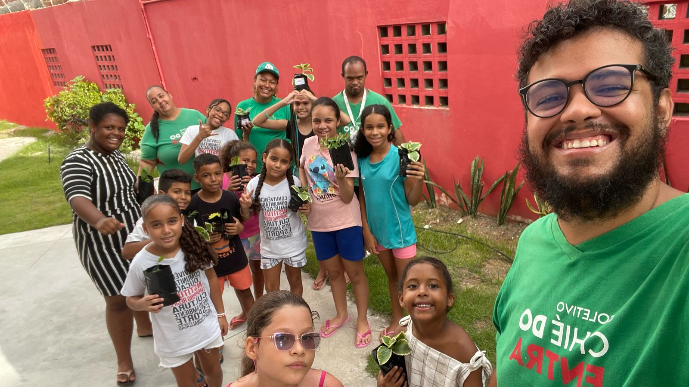

Educação Ambiental - Formando Agentes Ambientais Mirins
O projeto Agentes Ambientais Mirins é uma iniciativa promovida pelo Coletivo Chié do Entra e pelo Instituto Shopping Recife, que teve início em janeiro deste ano. Com a participação de 35 crianças, com idades entre 7 e 11 anos, sendo que o grupo inclui crianças neurotípicas, a proposta visa formar uma nova geração de líderes ambientais, incentivando-as a se tornarem agentes de mudança em suas comunidades. Por meio de formações sobre educação ambiental e o conhecimento do seu território, as crianças são capacitadas a compreender os impactos do acúmulo de lixo e o descarte incorreto de resíduos, criando um ambiente mais sustentável para todos.
Além de aprenderem sobre questões ambientais, os pequenos agentes são incentivados a promover praças verdes em sua própria comunidade, a favela Entra Apulso. Dessa forma, o projeto não só educa sobre a importância do cuidado com o meio ambiente, mas também proporciona um espaço de transformação local, ajudando a revitalizar áreas públicas com plantas e práticas sustentáveis. A iniciativa contribui para fortalecer o protagonismo infantil, ao mesmo tempo em que fomenta um senso de pertencimento e responsabilidade ambiental nas novas gerações.
Conclusão: Esse grupo de crianças participa de oficinas até março deste ano, e a ideia é que novas turmas sejam formadas até o fim de 2025. Com isso, o projeto poderá abarcar outras faixas etárias e promover o cuidado com o território, ampliando o alcance de sua missão de transformação e preservação ambiental nas comunidades envolvidas.